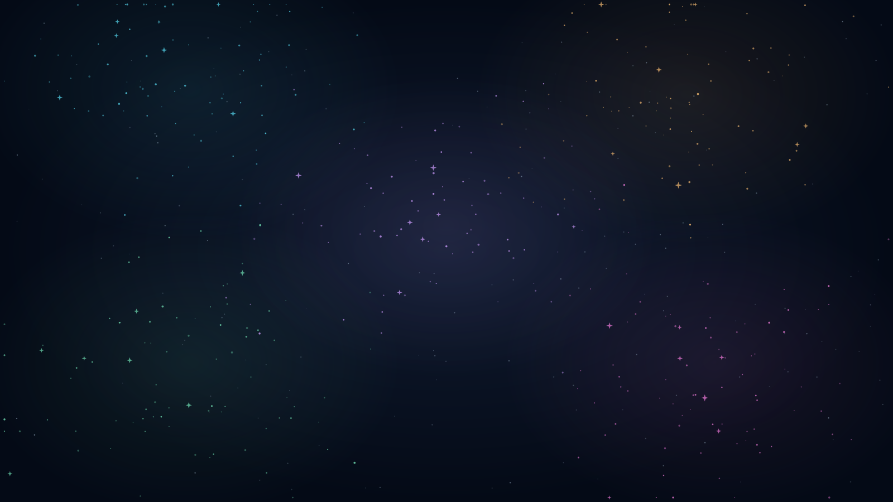

Vijf stations. Eén missie: vectoren begrijpen.
OefeningenreeksKies een wereld en bekijk wat al stevig zit.
Zelfstandig juist bij een nieuwe vraag telt als bewijs. Een verbetering na een fout telt als oefenen.
Draai je toestel om vectoren te tekenen. Je kunt de leerroute ook rechtop bekijken.